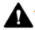

Renseignements relatifs à la sécurité et à la conformité aux réglementations : g.co/pixel/safety ou Paramètres
Où trouver l'information sur le produit
Manipulation et utilisation adéquates
Renseignements relatifs à la conformité aux réglementations
Ce guide comprend les consignes de sécurité fondamentales du livret de sécurité et de garantie imprimé fourni avec votre Pixel 6 et votre Pixel 6 Pro. Il comprend aussi des renseignements supplémentaires sur la sécurité, la réglementation et la garantie de votre Pixel 6 et de votre Pixel 6 Pro.
Renseignements relatifs à la sécurité et à la conformité aux réglementations : g.co/pixel/safety ou Paramètres  À propos du téléphone
À propos du téléphone  Guide relatif à la sécurité et à la réglementation.
Guide relatif à la sécurité et à la réglementation.
Renseignements concernant la garantie pour votre pays d'achat, y compris les instructions sur la manière d'effectuer une réclamation : g.co/pixel/warranty.
Étiquettes électroniques réglementaires et débit d'absorption spécifique (DAS) de votre appareil : Paramètres  À propos du téléphone
À propos du téléphone  Étiquettes réglementaires.
Étiquettes réglementaires.
Aide en ligne détaillée : g.co/pixel/help.
|  | AVERTISSEMENT : DONNÉES RELATIVES À LA SANTÉ ET À LA SÉCURITÉ; LIRE AVANT L'UTILISATION AFIN DE RÉDUIRE LE RISQUE DE BLESSURES PERSONNELLES, D'INCONFORT, DE DOMMAGES MATÉRIELS, Y COMPRIS LES DOMMAGES À VOS ACCESSOIRES PIXEL 6 OU PIXEL 6 PRO OU À TOUT APPAREIL CONNECTÉ, ET D'AUTRES DANGERS POTENTIELS. |
Manipulez votre téléphone avec soin. Vous risquez d'endommager le téléphone ou sa pile si vous désassemblez, déposez, pliez, brûlez, écrasez ou percez votre appareil. N'utilisez pas un téléphone si son boîtier est endommagé, si son écran est fissuré ou s'il présente toute autre forme de dommage physique. L'utilisation d'un téléphone endommagé peut provoquer une surchauffe ou des blessures. N'exposez pas votre téléphone à des liquides, ce qui pourrait provoquer un court-circuit et une surchauffe. Si votre téléphone est mouillé, ne tentez pas de le sécher à l'aide d'une source de chaleur externe.
Votre téléphone est conçu pour fonctionner à des températures ambiantes comprises entre 0 °C et 35 °C (32 °F à 95 °F), et doit être stocké à une température ambiante allant entre -20 °C et 45 °C (-4 °F et 113 °F). N'exposez pas votre téléphone à des températures supérieures à 45 °C (113 °F), par exemple en le plaçant sur le tableau de bord d'une voiture ou à proximité d'une bouche de chauffage, parce que cela pourrait endommager le téléphone, surchauffer la pile ou présenter un risque d'incendie. Gardez votre téléphone loin des sources de chaleur et des rayons directs du soleil. Si votre appareil devient trop chaud, débranchez-le de sa source d'alimentation s'il est branché, déplacez-le dans un endroit plus frais et ne l'utilisez pas tant qu'il n'a pas refroidi. Votre téléphone est conçu pour fonctionner à une altitude pouvant atteindre 5 000 m (16 404 pi).
L'utilisation de votre téléphone dans certains modes, comme les jeux, l'enregistrement de vidéos, la lampe de poche, la réalité virtuelle ou la réalité augmentée, peut générer plus de chaleur que dans des conditions de fonctionnement normales. Cela peut entraîner l'arrêt temporaire du téléphone ou son fonctionnement dans un mode d'alimentation réduite. Faites particulièrement attention lorsque vous vous servez de l'appareil avec ces modes. Pour obtenir plus d'information sur les risques associés à une exposition prolongée à la chaleur, veuillez consulter la section Exposition prolongée à la chaleur ci-dessous.
N'essayez pas de réparer votre téléphone vous-même. Si vous démontez l'appareil, celui-ci risque de ne plus être résistant à l'eau et cela pourrait provoquer des blessures ou des dommages à votre appareil.
Par exemple, l'appareil contient un laser qui peut être endommagé pendant le démontage, ce qui peut vous exposer à des émissions laser invisibles dangereuses.
Communiquez avec le service à la clientèle s'il ne fonctionne pas correctement ou s'il est endommagé. Pour en savoir plus, consultez la page g.co/pixel/contact.
Assurez-vous que l'adaptateur d'alimentation et le téléphone sont bien aérés lors de l'utilisation et de la recharge. L'utilisation de câbles ou d'adaptateurs d'alimentation endommagés, ou la recharge dans un environnement humide peuvent provoquer un incendie, une décharge électrique ou des blessures, endommager le chargeur sans fil ou causer d'autres dommages matériels. Ne rechargez pas votre téléphone lorsqu'il est mouillé. Évitez de recharger votre appareil sous la lumière directe du soleil.
Lorsque vous rechargez l'appareil, assurez-vous que l'adaptateur d'alimentation est branché sur une prise de courant près de votre appareil et facilement accessible. N'enfoncez pas cet adaptateur d'alimentation, ni tout autre adaptateur d'alimentation ou connecteur, de force sur une prise de courant si l'espace n'est pas suffisant pour les accueillir. Lorsque vous débranchez l'adaptateur d'alimentation d'une prise de courant, tirez sur l'adaptateur, jamais sur le câble de recharge. Le câble ne doit pas être tordu ni pincé, et vous ne devez pas forcer sur un connecteur que vous souhaitez enfoncer dans un port. Si vous recevez, pendant la recharge, un message vous invitant à débrancher le chargeur ou l'adaptateur d'alimentation, faites-le. Avant de tenter de continuer la recharge, assurez-vous que le connecteur du câble de recharge et le port de recharge du téléphone sont secs et non encombrés.
Rechargez votre téléphone uniquement avec le câble fourni ou les accessoires de recharge compatibles, en vente dans la boutique Google Store ou auprès de revendeurs autorisés Google (cherchez l'insigne « Fait pour » de Google). L'adaptateur c.a. doit être certifié comme étant doté d'une source d'alimentation limitée conformément à la norme CEI 60950-1, ou classifié PS2 conformément à la norme CEI 62368-1, avec les valeurs suivantes : 5 V en c. c. à un maximum de 3 A; 9 V en c. c. avec un maximum de 3 A lorsqu'il est utilisé avec un adaptateur c.a. compatible USB-PD, et jusqu'à 11 V en c. c. à un maximum de 3 A pour un adaptateur c.a. programmable compatible USB-PD 3.0 qualifié en fonction des exigences de la CTIA en manière de conformité avec les systèmes d'alimentation à pile (IEEE 1725). L'utilisation d'accessoires de recharge incompatibles risque de provoquer un incendie, des décharges électriques, des blessures, ou des dommages à l'appareil et aux accessoires.
Votre téléphone peut être rechargé avec un chargeur sans fil compatible avec Qi ou approuvé par Google. Ne placez pas d'objets métalliques ou magnétiques entre le chargeur sans fil et le téléphone, parce que cela pourrait provoquer une surchauffe de ces objets ou nuire à la recharge de l'appareil. Ces objets peuvent être, par exemple, des pièces de monnaie, des bijoux, des outils de plateau SIM et des cartes de crédit. Si vous utilisez un étui de téléphone métallique ou magnétique, retirez l'étui avant la connexion au chargeur sans fil pour éviter de surchauffer l'appareil ou le chargeur, ou de nuire à la recharge de l'appareil.
Dans des conditions normales de fonctionnement, le téléphone et son chargeur génèrent de la chaleur et respectent les normes et limites de température de surface applicables. Évitez le contact prolongé avec la peau lorsque l'appareil est utilisé ou en charge, car l'exposition de la peau à des surfaces chaudes pendant une longue période peut causer un inconfort ou des brûlures. Ne vous endormez pas sur votre appareil ou son adaptateur d'alimentation ou avec ceux-ci et ne les recouvrez pas d'une couverture ni d'un oreiller. Gardez cela à l'esprit si vous avez une condition physique qui nuit à votre capacité à détecter la chaleur contre votre peau.
Cet appareil n'est pas un jouet. Votre téléphone peut contenir (ou être fourni avec) des petites pièces, des éléments en plastique ou en métal et des pièces à bords tranchants qui peuvent causer des blessures ou présenter un risque d'étouffement. Il existe des cas d'enfants qui se sont étouffés avec des cordons et des câbles. Gardez les cordons et les câbles du téléphone hors de la portée des enfants (à plus de 0,9 mètre, ou 3 pieds) et ne laissez pas ces derniers jouer avec le téléphone et ses accessoires. Ils pourraient se faire mal, blesser d'autres personnes ou encore endommager accidentellement le téléphone. En cas d'ingestion de petites pièces, cherchez immédiatement à obtenir une aide médicale.
 |
L'exposition prolongée à des sons forts (y compris à de la musique) peut entraîner une perte auditive. Pour éviter des dommages auditifs potentiels, évitez l'écoute à un volume élevé pendant des périodes prolongées. Une exposition continue à des niveaux sonores élevés peut faire sembler les sons forts plus faibles qu'en réalité. Vérifiez le volume avant d'utiliser des écouteurs. |
Ce téléphone contient une pile lithium-ion rechargeable, une composante sensible qui peut causer des blessures si elle est endommagée. N'essayez pas de retirer la pile. Si vous devez remplacer la pile, communiquez avec Google ou avec un fournisseur de services agréé par Google. La page g.co/pixel/contact vous donnera les coordonnées nécessaires. Tout remplacement par un professionnel non qualifié risque d'endommager votre appareil. Le remplacement incorrect ou l'utilisation d'une pile non certifiée peut entraîner un risque d'incendie, d'explosion, de fuite ou d'autres dangers. Ne modifiez, ne reconstruisez et ne remettez pas à neuf la pile, ne la percez pas, n'essayez pas d'y insérer des objets, ne l'immergez pas et ne l'exposez pas à de l'eau ni à d'autres liquides, et ne l'exposez pas au feu, à la chaleur excessive ni à d'autres dangers.
Ne court-circuitez pas la pile et ne permettez pas à des objets métalliques ou conducteurs de relier les bornes de la pile. Évitez de laisser tomber le téléphone ou sa pile. Si le téléphone ou sa pile tombe, en particulier sur une surface dure, et que vous soupçonnez ou observez des dommages, communiquez avec Google ou un fournisseur de services agréé par Google afin de prévoir une inspection. En cas de fuite de la pile, ne laissez pas le liquide entrer en contact avec vos yeux, votre peau, ni vos vêtements. En cas de contact avec les yeux, ne les frottez pas. Rincez-les immédiatement à l'eau claire, puis consultez un médecin.
Ce téléphone contient une pile rechargeable aux ions de lithium conforme à la norme IEEE 1725 et à d'autres normes applicables.
Jetez votre appareil, les piles et les accessoires, et transportez-les conformément aux réglementations locales en matière d'environnement et de transport. Ne les transportez pas et ne les jetez pas de manière incorrecte avec les ordures ménagères. Toute mise au rebut ou tout transport inapproprié peut entraîner un incendie ou une explosion et présenter d'autres dangers. N'ouvrez pas l'appareil, ne l'écrasez pas et ne le chauffez pas à plus de 45 °C (113 °F), et ne le jetez pas au feu. Consultez la page g.co/pixel/recycle pour obtenir plus d'information sur le recyclage de votre appareil, de vos piles et de vos accessoires.
Pour éviter d'endommager les pièces de votre téléphone ou ses circuits internes, veillez à ne pas utiliser ni stocker l'appareil ou ses accessoires dans des environnements poussiéreux, enfumés, humides ou sales, ou à proximité de champs magnétiques. Éloignez l'appareil des sources de chaleur et des rayons directs du soleil. Ne laissez pas votre téléphone à l'intérieur d'un véhicule ou dans des lieux où la température peut dépasser 45 °C (113 °F), tels que le tableau de bord d'une voiture, le rebord d'une fenêtre, près d'une bouche de chauffage, ou derrière du verre exposé à la lumière directe du soleil ou à une forte lumière ultraviolette pendant de longues périodes. Cela peut endommager le téléphone, provoquer la surchauffe de la pile, ou présenter un risque d'incendie ou d'explosion.
Ne rechargez pas, n'utilisez pas, ne stockez pas et ne transportez pas votre téléphone dans des endroits où des produits inflammables ou explosifs sont entreposés (comme des stations-service, des dépôts de carburant ou des usines chimiques). N'utilisez pas votre appareil sans fil dans des endroits où des opérations de dynamitage sont en cours ni dans des atmosphères potentiellement explosives, par exemple dans des zones de ravitaillement ou de stockage de carburant ou de produits chimiques, ni les zones où l'air contient des niveaux élevés de substances chimiques, de vapeurs ou de particules inflammables (comme le grain, la poussière ou les poudres métalliques). Des étincelles dans de tels endroits pourraient provoquer une explosion ou un incendie donnant lieu à des blessures corporelles graves, voire fatales. Observez toutes les consignes et les panneaux affichés dans des lieux où ces risques peuvent exister.
Votre téléphone peut accéder à des services de cartographie et de navigation. Les cartes et la navigation peuvent nécessiter l'utilisation d'une connexion de données et des services de localisation fonctionnels; elles peuvent ne pas être accessibles en tout temps ni offertes dans toutes les régions. Les cartes et les itinéraires peuvent être imprécis, et les conditions réelles peuvent différer de la carte, des données, de la circulation, des itinéraires, du contenu et d'autres résultats présentés. Examinez attentivement les itinéraires et respectez le code de la route ainsi que la signalisation en vigueur. Faites preuve de jugement et de bon sens, et utilisez les services de cartographie et de navigation à vos propres risques. Vous êtes responsable de votre comportement et de ses conséquences en tout temps. La navigation avec la RA nécessite des images à jour de Google Street View et une luminosité extérieure élevée. Elle n'est pas proposée en Inde.
L'utilisation de l'appareil dans certaines activités peut vous distraire et causer une situation dangereuse pour vous ou pour d'autres personnes. Pour réduire les risques d'accident (et parce que c'est interdit par la loi dans de nombreuses régions), n'utilisez pas votre appareil lorsque vous conduisez un véhicule, lorsque vous êtes à vélo ni lorsque vous utilisez de la machinerie, et ne l'utilisez pas dans des activités qui pourraient avoir des conséquences graves. Suivez les lois locales sur l'utilisation d'appareils mobiles, d'écouteurs et de casques.
Cet appareil a été évalué et s'est avéré conforme aux exigences de conformité en matière d'exposition aux ondes radio. Il est conçu et fabriqué pour ne pas dépasser les limites d'émission applicables en matière d'exposition aux radiofréquences (RF).
Dans les pays où la limite du débit d'absorption spécifique (DAS) est de 1,6 W/kg en moyenne sur un gramme de tissu, les valeurs DAS les plus élevées pour ce type d'appareil sont de 1,19 W/kg pour le Pixel 6 (G9S9B), 1,20 W/kg pour le Pixel 6 (GB7N6/GR1YH) et 1,11 W/kg pour le Pixel 6 Pro lorsqu'il est utilisé contre la tête sans séparation et 1,20 W/kg pour le Pixel 6 (G9S9B) ou 1,20 W/kg pour le Pixel 6 (GB7N6/GR1YH) et 1,19 W/kg pour le Pixel 6 Pro contre le corps avec une séparation de 1,0 cm (0,4 pouce). Dans les pays où la limite pour les débits d'absorption spécifiques (DAS) est de 2,0 W/kg en moyenne sur 10 grammes de tissu, les valeurs DAS les plus élevées pour ce type d'appareil sont de 1,00 W/kg pour le Pixel 6 (GB7N6/GR1YH) et de 0,99 W/kg pour le Pixel 6 Pro lorsqu'il est utilisé contre la tête, ainsi que de 1,38 W/kg pour le Pixel 6 et de 1,40 W/kg pour le Pixel 6 Pro près du corps à une distance de 5 mm (0,2 po).
Vous trouverez les valeurs du DAS applicables dans chacune de ces régions sur votre appareil : Paramètres  À propos du téléphone
À propos du téléphone  Étiquettes réglementaires.
Étiquettes réglementaires.
Pour réduire l'exposition à l'énergie RF, servez-vous d'une option mains libres, comme le haut-parleur intégré, les écouteurs fournis ou d'autres accessoires similaires. Assurez-vous que les accessoires de l'appareil, comme un étui, sont exempts de composants métalliques. Éloignez suffisamment l'appareil de votre corps pour vous conformer aux distances minimales de sécurité.
Vous trouverez de plus amples renseignements sur les valeurs DAS sur les pages suivantes :
fcc.gov
icnirp.org
ec.europa.eu
dot.gov.in
Observez les règles relatives à l'interdiction des technologies sans fil (par exemple, les connexions cellulaires et Wi-Fi). Votre appareil est conçu conformément aux réglementations sur les radiofréquences, mais l'utilisation d'appareils sans fil peut avoir une incidence négative sur d'autres équipements électroniques. Par exemple, en avion ou juste avant l'embarquement, respectez les instructions d'utilisation de votre appareil sans fil fournies par la compagnie aérienne. L'utilisation d'un appareil sans fil dans un avion peut perturber les réseaux sans fil, présenter un danger pour le fonctionnement de l'avion ou être illégale. Il se peut cependant que vous puissiez utiliser votre appareil en mode Avion.
Les appareils sans fil risquent de ne pas être fiables pour les communications d'urgence. Cet appareil fonctionne à l'aide de signaux radio. Il peut ne pas établir ni maintenir de connexion en permanence. De plus, votre téléphone est alimenté par une pile rechargeable, sur laquelle la température, l'utilisation, les dommages et d'autres facteurs peuvent influer. Bien que, dans certains territoires de compétence, les renseignements en cas d'urgence soient transmis à l'aide de réseaux sans fil, il se peut que votre appareil ne reçoive pas toujours ces communications, selon la connectivité du réseau ou d'autres facteurs. Il se peut que l'accès à certaines fonctionnalités et aux renseignements ou aux communications d'urgence ne soit pas proposé dans toutes les régions ni toutes les langues.
Votre téléphone utilise des puces radio et d'autres composants qui émettent des champs électromagnétiques. Il contient également des aimants. Ces champs électromagnétiques et ces aimants peuvent interférer avec les appareils médicaux, comme les stimulateurs cardiaques et d'autres appareils médicaux implantés. Gardez toujours le téléphone et son chargeur à une distance sécuritaire de l'appareil médical. Si vous avez des questions sur l'utilisation de votre téléphone avec votre appareil médical, ou à proximité de celui-ci, consultez votre fournisseur de soins de santé avant d'utiliser votre téléphone. Si vous soupçonnez votre téléphone d'interférer avec votre appareil médical, éteignez votre appareil Google et consultez votre médecin pour obtenir des renseignements propres à votre appareil médical.
Éteignez votre appareil sans fil lorsque le personnel des hôpitaux, des cliniques ou d'autres établissements de santé vous le demande. Cette démarche vise à éviter d'éventuelles interférences avec les appareils médicaux sensibles.
Votre téléphone et les fonctionnalités de vos applications d'exercice associées ne sont pas des dispositifs médicaux. Ces fonctionnalités ne sont fournies qu'à titre d'information. Votre téléphone et ces applications ne sont pas conçus pour être utilisés dans le cadre du diagnostic ni du traitement d'une maladie ou d'un autre trouble, ni pour contrôler, atténuer ou prévenir une maladie ou d'autres troubles.
Certaines personnes peuvent faire une réaction aux matériaux utilisés dans les articles portables qui sont en contact prolongé avec la peau, comme le nickel ou le latex. Cela peut être dû à des allergies, à la présence d'éléments irritants pour la peau comme le savon ou la sueur, ou à d'autres causes. Maintenez votre téléphone propre et sec. En cas d'irritation cutanée, cessez d'utiliser le téléphone et consultez un médecin.
Un faible pourcentage d'utilisateurs peuvent ressentir des maux de tête, des convulsions, des évanouissements, une fatigue oculaire, de la fatigue ou de la sécheresse oculaire déclenchés par diverses stimulations visuelles, comme des lumières clignotantes, des motifs lumineux ou l'utilisation d'appareils électroniques avec des écrans. Ces symptômes peuvent être subis par des personnes qui n'ont jamais connu de tels problèmes auparavant. Si vous avez des antécédents de convulsions, d'évanouissements, d'épilepsie, ou si vous éprouvez un problème médical ou un inconfort sur lequel, selon vous, votre téléphone pourrait avoir un impact, consultez un médecin avant d'utiliser votre appareil. Arrêtez immédiatement d'utiliser votre téléphone et communiquez avec un médecin si vous présentez des symptômes que vous pensez pouvoir être provoqués ou aggravés par votre téléphone (par exemple : maux de tête, évanouissements ou convulsions).
Les activités répétitives, comme la rédaction au clavier ou l'utilisation des écrans tactiles, peuvent entraîner des inconforts dans vos doigts, vos mains, vos poignets, vos bras, vos épaules ou d'autres parties de votre corps. Si vous ressentez un inconfort résultant de ces activités, arrêtez d'utiliser votre téléphone et consultez votre médecin.
 |
Avertissement : Votre téléphone contient un module laser de classe 1. La conception de l'appareil intègre un dispositif optique et un boîtier de protection pour éviter toute exposition à un niveau de rayonnement laser supérieur à la classe 1. |
Les modules laser de ce produit sont conformes aux normes 21 CFR 1040.10 et 1040.11, sauf pour la conformité à la norme CEI 60825-1 v3., comme décrit dans l'avis n° 56 concernant les appareils laser du 8 mai 2019. L'utilisation de commandes, d'ajustements ou de procédures autres que ceux spécifiés dans le présent document peut entraîner une exposition dangereuse aux radiations. Par conséquent, ce produit doit être réparé par Google ou par un fournisseur de services agréé.
Module laser de la mise au point automatique : fabriqué en Chine. STMicroelectronics, 12 Rue Jules Horowitz, 38019 Grenoble, France.
Module laser de proximité : fabriqué en Autriche. ams AG, Tobelbader Str. 30, 8141 Oberpremstätten, Autriche.
Suivez ces instructions lors de l'utilisation, de l'entreposage ou du nettoyage de votre téléphone :
N'utilisez pas et ne rechargez pas le téléphone à des températures ambiantes inférieures à 0 °C (32 °F) ou supérieures à 35 °C (95 °F). Si la température interne de l'appareil dépasse les températures de fonctionnement normales, il se peut que vous observiez les comportements suivants pendant qu'il tente de réguler sa température : des performances et une connectivité réduites, une incapacité de se recharger ou d'afficher du contenu, ou la mise hors tension de l'écran ou de l'appareil. Il se peut que vous ne puissiez pas utiliser l'appareil lorsqu'il régule sa température. Déplacez l'appareil vers un endroit plus frais (ou plus chaud) et attendez quelques minutes avant de tenter de l'utiliser de nouveau.
Débranchez le téléphone et l'adaptateur d'alimentation avant le nettoyage, par temps d'orage ou en cas d'inutilisation prolongée. Ne nettoyez pas votre téléphone lorsqu'il est en cours de recharge. Cela pourrait provoquer des blessures ou des dommages à votre appareil. Évitez les solvants et les matériaux abrasifs qui pourraient endommager la surface du produit. N'utilisez pas de détergent, de poudre ni d'autres agents chimiques (comme le benzène) pour nettoyer le téléphone ou ses accessoires.
L'exposition à des produits de maquillage, à des produits chimiques ou à des produits teints comme le denim peut tacher le Pixel 6 et les étuis de couleur pâle.
Pour nettoyer votre téléphone, nous vous recommandons de l'essuyer délicatement avec un linge doux sans charpie. Utilisez un chiffon sec pour les traces, les taches ou la poussière, et un chiffon légèrement humide (pas mouillé) pour les transferts de couleur, comme ceux causés par du maquillage ou une nouvelle paire de jeans. Pour les taches et les saletés superficielles, utilisez des lingettes pour écran ou un nettoyant pour lunettes sur l'écran. Sur le dos et les côtés, servez-vous de savon de maison ordinaire ou des lingettes de nettoyage sans javellisant. Vous trouverez des instructions de nettoyage et d'entretien supplémentaires sur la page g.co/pixel/care.
Pour désinfecter votre Pixel 6, y compris son écran, vous pouvez utiliser des lingettes désinfectantes ménagères ordinaires ou des lingettes à base d'alcool isopropylique à 70 %. N'utilisez pas de lingettes contenant des produits javellisants.
Votre téléphone est résistant à l'eau, conformément à la norme IP68, mais il n'est pas étanche. La résistance à l'eau n'est pas une condition permanente et peut être compromise à la suite de l'usure normale, de réparations, du démontage ou de dommages. N'exposez pas votre téléphone à des liquides, ce qui pourrait provoquer un court-circuit et une surchauffe. Le chargeur de l'appareil et les autres accessoires ne sont pas résistants à l'eau. Ils ne doivent pas être exposés à des liquides.
Évitez de placer tout élément contenant des aimants ou sensible au magnétisme, comme des cartes de crédit, des cartes bancaires, des bandes audio ou vidéo, ou des dispositifs de mémoire magnétique, à proximité de ce téléphone ou de son câble de recharge parce que vous risquez de perdre les données stockées sur ces éléments. Les éléments qui contiennent des données sensibles aux champs magnétiques doivent être conservés à une distance d'au moins 5 cm (2 po) de ce téléphone.
Votre téléphone ne devrait être réparé que par Google ou par un fournisseur de services agréé par Google. Des réparations ou des modifications non autorisées peuvent causer des dommages permanents à l'appareil et avoir une incidence sur la couverture de votre garantie ainsi que les autorisations réglementaires. Communiquez avec le service à la clientèle pour obtenir une réparation autorisée. Pour obtenir de l'aide et de l'assistance en ligne, consultez la page g.co/pixel/help. Si vous envoyez votre téléphone se faire réparer, il se peut que vous receviez un téléphone de remplacement (à la place de votre téléphone d'origine). Si vous envoyez votre téléphone se faire réparer, il se peut que vous receviez un téléphone de remplacement remis à neuf (à la place de votre téléphone d'origine). Des pièces remises à neuf peuvent également être utilisées pour effectuer les réparations. La réparation ou le remplacement peut entraîner la perte des données générées par l'utilisateur.
Les renseignements relatifs à la conformité aux réglementations, à la certification et à la conformité propres à votre Pixel 6 ou Pixel 6 Pro se trouvent sur votre téléphone, sous Paramètres  À propos du téléphone
À propos du téléphone  Étiquettes réglementaires.
Étiquettes réglementaires.
Important : Cet appareil et les autres accessoires compris ont démontré leur compatibilité électromagnétique (CEM) dans des conditions qui incluent l'usage d'appareils compatibles et de câbles blindés entre les composants du système. Il est important d'utiliser des appareils compatibles et des câbles blindés entre les composants du système afin de réduire la possibilité d'interférence avec les radios, les téléviseurs et les autres appareils électroniques.
Remarque : Cet équipement a été testé et jugé conforme aux limites d'un appareil numérique de classe B, conformément à la partie 15 des règles de la FCC. Ces limites sont conçues pour garantir une protection raisonnable contre les interférences nuisibles dans une installation résidentielle. Cet équipement génère, utilise et peut émettre de l'énergie de fréquence radio et, s'il n'est pas installé et employé conformément aux instructions, peut causer des interférences nuisibles aux communications radio. Cependant, aucune garantie n'est donnée que des interférences ne seront pas générées dans une installation en particulier. Si cet équipement cause des interférences nuisibles à la réception des signaux radio ou de télévision, ce qui peut être déterminé en allumant et en éteignant l'équipement, l'utilisateur est invité à essayer de corriger le problème en prenant l'une des mesures suivantes :
Toute modification n'ayant pas été approuvée expressément par Google peut entraîner l'annulation du droit qui vous a été accordé d'utiliser l'équipement.
Cet appareil est conforme à la partie 15 des règles de la FCC. Son utilisation est soumise aux deux conditions suivantes :
Numéro de modèle : G9S9B, GB7N6 et G8V0U
Nom du produit : Pixel 6 et Pixel 6 Pro
Partie responsable :
Google LLC
1600 Amphitheatre Parkway
Mountain View, CA 94043
Pour nous joindre : g.co/pixel/contact
Votre appareil a été évalué et certifié compatible avec les prothèses auditives conformément à la spécification technique ANSI C63.19. Il existe deux façons de mesurer la compatibilité avec une prothèse auditive :
Le Pixel 6 est classé M4/T4 et le Pixel 6 Pro est classé M4/T4, conformément aux réglementations de la FCC en matière de compatibilité des prothèses auditives pour les appareils sans fil.
Conformément à la réglementation de la FCC, un téléphone cellulaire est considéré comme compatible avec les prothèses auditives s'il est noté M3 ou M4 en termes de couplage acoustique, ou T3 ou T4 en matière de couplage inductif.
L'utilisation de certaines technologies sans fil de ces téléphones avec des prothèses auditives a été testée et validée. Cependant, ces téléphones peuvent contenir des technologies sans fil plus récentes, dont l'utilisation avec des prothèses auditives n'a pas encore été testée. Il est important de tester minutieusement les différentes fonctionnalités de ces téléphones à différents endroits, en utilisant votre prothèse auditive ou votre implant cochléaire pour déterminer si vous entendez des interférences. Consultez votre fournisseur de services ou Google pour obtenir des renseignements sur leur compatibilité avec les prothèses auditives. Si vous avez des questions sur les modalités de retour ou d'échange, consultez votre fournisseur de services ou le détaillant du téléphone.
Cet appareil est conforme aux limites de la norme NMB-003 pour appareils de classe B.
Votre appareil est conforme aux normes CNR d'exemption de licence d'ISDE. Son utilisation est soumise aux deux conditions suivantes :
Le présent appareil est conforme aux CNR d'ISDE Canada applicables aux appareils radio exempts de licence. L'exploitation est autorisée aux deux conditions suivantes:
L'appareil qui fonctionne dans la bande 5 150 à 5 250 MHz doit uniquement être utilisé à l'intérieur afin de réduire les risques d'interférences nuisibles sur les systèmes mobiles par satellite sur les mêmes canaux.
Les dispositifs fonctionnant dans la bande de 5 150 à 5 250 MHz sont réservés uniquement pour une utilisation à l’intérieur afin de réduire les risques de brouillage préjudiciable aux systèmes de satellites mobiles utilisant les mêmes canaux.
 |
Par la présente, Google LLC déclare que les types d'équipement radio GB7N6 et GLU0G sont conformes au Règlement de 2017 sur les équipements radioélectriques. La version complète de la déclaration de conformité se trouve à l'adresse g.co/pixel/conformity. |
Restrictions ou exigences du Règlement de 2017 sur les équipements radioélectriques
L'appareil est limité à une utilisation intérieure uniquement lorsqu'il fonctionne dans la gamme de fréquences comprise entre 5 150 et 5 350 MHz, et entre 5 925 et 6 425 MHz au Royaume-Uni.
Royaume-Uni
Les données fournies ici représentent la puissance de radiofréquence maximale transmise dans les bandes de fréquences dans lesquelles fonctionne l'équipement radio.
|
Fréquence |
Puissance : Pixel 6 |
Puissance : Pixel 6 Pro |
|
Wi-Fi : de 2 400 MHz à 2 483,5 MHz |
< 20 dBm |
< 20 dBm |
|
Wi-Fi : de 5 150 MHz à 5 350 MHz |
< 23 dBm |
< 23 dBm |
|
Wi-Fi : de 5 470 MHz à 5 725 MHz |
< 23 dBm |
< 23 dBm |
|
Wi-Fi : de 5 745 MHz à 5 825 MHz |
< 14 dBm |
< 14 dBm |
|
Wi-Fi : de 5 925 MHz à 6 425 MHz (VLP/LPI) |
< 14 dBm/< 23 dBm |
< 14 dBm/< 23 dBm |
|
Bluetooth : de 2 400 MHz à 2 483,5 MHz |
< 20 dBm |
< 20 dBm |
|
NFC : 13,56 MHz |
< -9 dBuA/m à 10 m |
< -7 dBuA/m à 10 m |
|
GSM 900 |
< 33,5 dBm |
< 34 dBm |
|
GSM 1 800 |
< 31 dBm |
< 31 dBm |
|
Bande UMTS I/VIII |
< 25 dBm |
< 25,5 dBm |
|
LTE : 1, 3, 7, 8, 20, 28, 38, 40, 42 |
< 25 dBm |
< 25,5 dBm |
|
LTE : 38 HPUE |
< 27 dBm |
< 27 dBm |
|
NR : n1, n3, n7, n8, n28, n38, n40, n77, n78 |
< 25 dBm |
< 25,5 dBm |
|
NR : n78 HPUE |
< 27 dBm |
< 27 dBm |
|
Transmission d'énergie sans fil (110 kHz à 148,5 kHz) |
< -18 dBuA/m à 10 m |
< -17 dBuA/m à 10 m |
|
UWB (6 489,6 MHz, 7 987,2 MHz) (Pixel 6 Pro) |
s. o. |
< -4 dBm/50 MHz |
Google n'est pas responsable des interférences de radio ou de télévision causées par des modifications non autorisées de ces appareils et de leurs accessoires, ou la substitution ou la connexion de câbles et d'équipements autres que ceux spécifiés par Google. La correction des interférences provoquées par ces modifications, ces substitutions ou ces connexions non autorisées incombe à l'utilisateur. Google et ses revendeurs ou distributeurs agréés ne sont pas responsables de tout dommage ni violation des règlements gouvernementaux découlant du non-respect de ces directives.
Ce produit est conforme au Texte réglementaire du règlement n° 3032 de 2012 relatif à la limitation de l'utilisation de certaines substances dangereuses dans les équipements électriques et électroniques
Le règlement REACH du Royaume-Uni (concernant l'enregistrement, l'évaluation et l'autorisation des substances chimiques, ainsi que les restrictions applicables à ces substances, Texte réglementaire du règlement n° 1577 de 2020) est le cadre réglementaire des substances chimiques du Royaume-Uni. Google respecte toutes les exigences de ce règlement et s'engage à fournir à ses clients les renseignements concernant la présence de substances extrêmement préoccupantes (SVHC). Pour obtenir plus d'information, vous pouvez communiquer avec nous à l'adresse Env-Compliance@google.com.
 |
Le symbole DEEE à gauche signifie que, conformément aux lois et réglementations locales, votre produit et sa ou ses piles doivent être éliminés séparément des déchets ménagers. Lorsque ce produit atteint sa fin de vie utile, apportez-le à un point de collecte désigné par les autorités locales afin qu'il soit éliminé ou recyclé de manière sécuritaire. |
La collecte et le recyclage distincts de votre produit, de ses accessoires électriques et de sa ou ses piles contribuent à préserver les ressources naturelles et à protéger la santé humaine et l'environnement.
Fabricant : Google LLC, 1600 Amphitheatre Parkway, Mountain View, CA 94043, États-Unis
Google Commerce Limited UK establishment, Belgrave House, 76 Buckingham Palace Road, Londres, SW1W 9TQ.
 |
Par la présente, Google LLC déclare que les types d'équipement radio GB7N6 et GLU0G sont conformes à la directive 2014/53/UE sur les équipements radioélectriques. La version complète de la déclaration de conformité se trouve à l'adresse g.co/pixel/conformity. |
Restrictions ou exigences de la directive 2014/53/UE
L'appareil est limité à une utilisation intérieure uniquement lorsqu'il fonctionne dans la gamme de fréquences comprise entre 5 150 et 5 350 MHz dans les pays suivants : AT, BE, BG, CH, CY, CZ, DE, DK, EE, EL, ES, FI, FR, HR, HU, IE, IS, IT, LI, LT, LU, LV, MT, NL, NO, PL, PT, RO, SE, SI, SK, TR, UK (NI).
L'appareil est limité à une utilisation intérieure uniquement lorsqu'il fonctionne dans la gamme de fréquences comprise entre 5 925 à 6 425 MHz (dans la mesure où ces fréquences sont disponibles) dans les pays suivants : AT, BE, BG, CH, CY, CZ, DE, DK, EE, EL, ES, FI, FR, HR, HU, IE, IS, IT, LI, LT, LU, LV, MT, NL, NO, PL, PT, RO, SE, SI, SK, TR, UK (NI).
Union européenne
Les données fournies ici représentent la puissance de radiofréquence maximale transmise dans les bandes de fréquences dans lesquelles fonctionne l'équipement radio.
|
Fréquence |
Puissance : Pixel 6 |
Puissance : Pixel 6 Pro |
|
Wi-Fi : de 2 400 MHz à 2 483,5 MHz |
< 20 dBm |
< 20 dBm |
|
Wi-Fi : de 5 150 MHz à 5 350 MHz |
< 23 dBm |
< 23 dBm |
|
Wi-Fi : de 5 470 MHz à 5 725 MHz |
< 23 dBm |
< 23 dBm |
|
Wi-Fi : de 5 745 MHz à 5 825 MHz |
< 14 dBm |
< 14 dBm |
|
Wi-Fi : de 5 925 MHz à 6 425 MHz (VLP/LPI) |
< 14 dBm/< 23 dBm |
< 14 dBm/< 23 dBm |
|
Bluetooth : de 2 400 MHz à 2 483,5 MHz |
< 20 dBm |
< 20 dBm |
|
NFC : 13,56 MHz |
< -9 dBuA/m à 10 m |
< -7 dBuA/m à 10 m |
|
GSM 900 |
< 33,5 dBm |
< 34 dBm |
|
GSM 1 800 |
< 31 dBm |
< 31 dBm |
|
Bande UMTS I/VIII |
< 25 dBm |
< 25,5 dBm |
|
LTE : 1, 3, 7, 8, 20, 28, 38, 40, 42 |
< 25 dBm |
< 25,5 dBm |
|
LTE : 38 HPUE |
< 27 dBm |
< 27 dBm |
|
NR : n1, n3, n7, n8, n28, n38, n40, n77, n78 |
< 25 dBm |
< 25,5 dBm |
|
NR : n78 HPUE |
< 27 dBm |
< 27 dBm |
|
Transmission d'énergie sans fil (110 kHz à 148,5 kHz) |
< -18 dBuA/m à 10 m |
< -17 dBuA/m à 10 m |
|
UWB (6 489,6 MHz, 7 987,2 MHz) (Pixel 6 Pro) |
s. o. |
< -4 dBm/50 MHz |
Google n'est pas responsable des interférences de radio ou de télévision causées par des modifications non autorisées de ces appareils et de leurs accessoires, ou la substitution ou la connexion de câbles et d'équipements autres que ceux spécifiés par Google. La correction des interférences provoquées par ces modifications, ces substitutions ou ces connexions non autorisées incombe à l'utilisateur. Google et ses revendeurs ou distributeurs agréés ne sont pas responsables de tout dommage ni violation des règlements gouvernementaux découlant du non-respect de ces directives.
|
Le symbole DEEE à gauche signifie que, conformément aux lois et réglementations locales, votre produit et sa ou ses piles doivent être éliminés séparément des déchets ménagers. Lorsque ce produit atteint sa fin de vie utile, apportez-le à un point de collecte désigné par les autorités locales afin qu'il soit éliminé ou recyclé de manière sécuritaire. |
La collecte et le recyclage distincts de votre produit, de ses accessoires électriques et de sa ou ses piles contribuent à préserver les ressources naturelles et à protéger la santé humaine et l'environnement.
Ce produit est conforme à la directive 2011/65/UE du Parlement européen et du Conseil du 8 juin 2011 relative à la limitation de l'utilisation de certaines substances dangereuses dans les équipements électriques et électroniques (RoHS) et ses modifications.
Le règlement REACH (concernant l'enregistrement, l'évaluation et l'autorisation des substances chimiques, ainsi que les restrictions applicables à ces substances, CE nº 1907/2006) est le cadre réglementaire des substances chimiques de l'UE. Google respecte toutes les exigences de ce règlement et s'engage à fournir à ses clients les renseignements concernant la présence de substances extrêmement préoccupantes (SVHC). Pour obtenir plus d'information, vous pouvez communiquer avec nous à l'adresse Env-Compliance@google.com.
Fabricant : Google LLC, 1600 Amphitheatre Parkway, Mountain View, CA 94043, États-Unis
Google Commerce Limited, 70 Sir John Rogerson's Quay, Dublin 2, Irlande
La fonction WLAN de ces appareils est limitée à une utilisation à l'intérieur sur la bande de fréquences 5 150 MHz à 5 350 MHz afin de réduire les risques d'interférences nuisibles sur les systèmes cellulaires par satellite sur les mêmes canaux.
Les émetteurs à bande ultralarge ne doivent pas être utilisés à une distance inférieure à celle proposée sur les sites australiens de radioastronomie. Pour obtenir plus d'information sur la distance proposée, veuillez vous référer à la licence de classe Radiocommunications (appareils à faible potentiel d'interférence) de 2015 publiée par l'Australian Communications and Media Authority.
|
Conforme aux |
L'appareil est restreint à une utilisation intérieure uniquement lorsqu'il fonctionne dans la gamme de fréquences de 5 GHz (W52/W53) (sauf lorsqu'il communique avec un appareil radio à forte puissance).
Cet appareil est un équipement de classe B. Bien qu'il ait été conçu pour être utilisé dans un environnement résidentiel, il pourrait nuire à la réception s’il est utilisé près d’une radio ou d’un récepteur de télévision. Veuillez suivre les instructions indiquées dans le manuel d'instructions.
 VCCI-B
VCCI-B
 無線射頻暴露
無線射頻暴露
以 GB7N6 而言, SAR 標準值: 2.0 W/kg, 送測產品實測值為: 0.95 W/kg.
以 GLU0G 而言, SAR 標準值: 2.0 W/kg, 送測產品實測值為: 0.86 W/kg.
台灣法規遵循
使用過度恐傷害視力
減少電磁波影響，請妥適使用
取得審驗證明之低功率射頻器材，非經核准，公司、商號或使用者均不得擅自變更頻率、加大功率或變更原設計之特性及功能。低功率射頻器材之使用不得影響飛航安全及干擾合法通信；經發現有干擾現象時，應立即停用，並改善至無干擾時方得繼續使用。前述合法通信，指依電信管理法規定作業之無線電通信。低功率射頻器材須忍受合法通信或工業、科學及醫療用電波輻射性電機設備之干擾。
應避免影響附近雷達系統之操作。
經過格式化的實際儲存空間容量會略減。
應避免影響附近雷達系統之操作。
|
Nom de l'équipement : Téléphone cellulaire Pixel 6 et 6 Pro; désignation de type : GB7N6 et GLU0G |
|||||||
單元\ Unité |
限用物質及其化學符號 Substances réglementées et symboles chimiques connexes |
||||||
| 鉛 Plomb (Pb) |
汞 Mercure (Hg) |
鎘 Cadmium (Cd) |
六價鉻 Chrome hexavalent (Cr+6) |
多溴聯苯 Diphényles polybromés (PBB) |
多 溴 二苯醚 Éthers diphényliques polybromés (EDP) |
||
| 外殼 Boîtier | O | O | O | O | O | O | |
| 電子元件 Composant électronique |
— | O | O | O | O | O | |
| 連接器 Connecteur | — | O | O | O | O | O | |
| 電路板 Carte de circuits imprimés | O | O | O | O | O | O | |
| 顯示 Écran | O | O | O | O | O | O | |
| 電池 Pile | — | O | O | O | O | O | |
| 包裝 Emballage | O | O | O | O | O | O | |
| 其它 Autre | O | O | O | O | O | O | |
|
備考1.〝超出0.1 wt %〞及〝超出0.01 wt %〞係指限用物質之百分比含量超出百分比含量基準值。 備考2.〝O〞係指該項限用物質之百分比含量未超出百分比含量基準值。 備考3.〝－〞係指該項限用物質為排除項目。 |
|||||||
La garantie limitée est également offerte dans le centre de garantie de la boutique Google Store.
Pixel, Google, le logo G ainsi que les marques et logos connexes sont des marques de commerce de Google LLC. Wi-Fi🅫 et le logo Wi-Fi sont des marques de commerce de Wi-Fi Alliance. La marque de mot et les logos Bluetooth🅫 sont des marques déposées détenues par Bluetooth SIG, Inc. Toutes les autres marques de commerce appartiennent à leurs propriétaires respectifs.